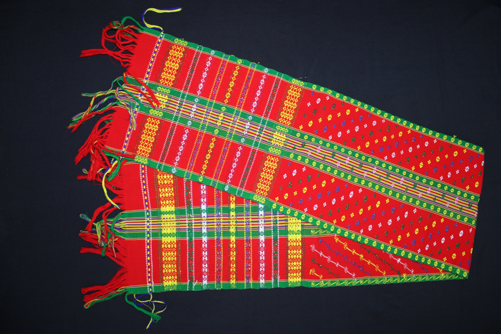

An eminent geographical indication, Riha saree find their home in the state of Tripura.
The Riha saree is typically made of cotton or silk and is characterized by its intricate designs and vibrant colors. These sarees often feature traditional tribal motifs and patterns, showcasing the artistic skills of the weavers in Tripura. The Riha saree holds cultural significance and is worn on various occasions, including festivals, weddings, and other celebrations, as a symbol of tradition and heritage.
The Riha saree, a traditional attire from Tripura, is typically made through a process involving weaving and embellishment. Here is an overview of how Riha sarees are made: 1. Material Selection: Choose cotton or silk for the saree. 2. Dyeing: Dye the material in vibrant colors, often using natural dyes. 3. Weaving: Skilled weavers use handlooms to create intricate patterns and designs. 4. Design and Motifs: Incorporate traditional tribal or geometric motifs during weaving. 5. Embellishments: Add embroidery, sequins, beads, or zari work for decoration. 6. Finishing: Trim threads, hem edges, and ensure quality. 7. Final Touches: The Riha saree is now ready for wearing or sale, representing Tripura's cultural heritage and craftsmanship.
